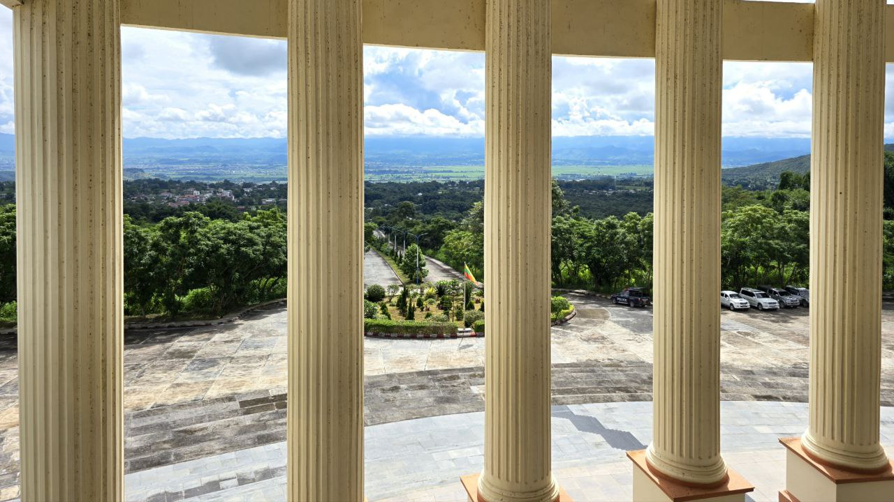
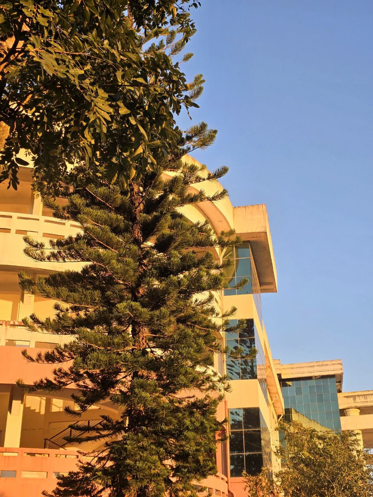
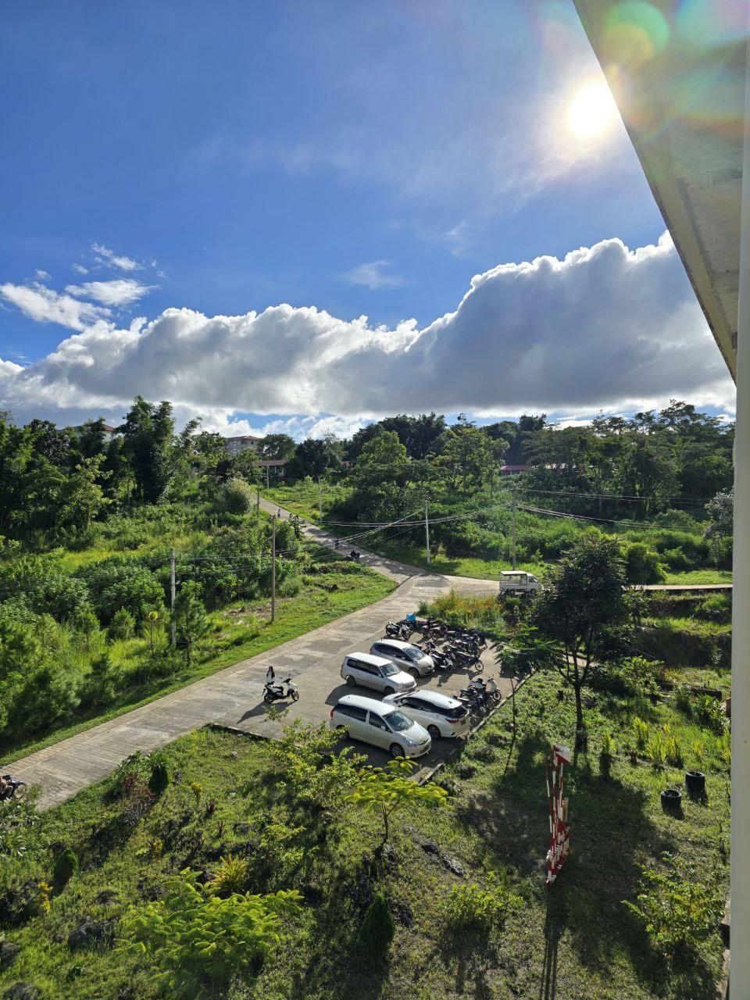

About the University
တောင်ကြီးကွန်ပျူတာတက္ကသိုလ်(UCSTGI)ကို ရှမ်းပြည်နယ်၏ ICT ကဏ္ဍ ဖွံ့ဖြိုးတိုးတက်စေရန် ရည်ရွယ်၍ ၂၀၀၀ ပြည့်နှစ်၊ သြဂုတ်လ ၁၅ ရက်နေ့တွင် အစိုးရကွန်ပျူတာကောလိပ် (GCC) အဖြစ် စတင်တည်ထောင်ခဲ့ပါသည်။ ၂၀၀၇ ခုနှစ်၊ ဇန်နဝါရီလ ၂၀ ရက်နေ့တွင် တက္ကသိုလ်အဆင့်သို့ တိုးမြှင့်သတ်မှတ်ခဲ့ပြီး လက်ရှိတွင် တောင်ကြီး-ဟိုပုံး ပြည်ထောင်စုလမ်းမကြီးအနီး ၂၁၅ ဧက ကျယ်ဝန်းသော ဝင်းအတွင်း တည်ရှိပါသည်။ ဤတက္ကသိုလ်သည် ဒေသတွင်းရှိ လူငယ်များအား ခေတ်မီကွန်ပျူတာနည်းပညာရပ်များကို အဆင့်မြင့်စွာ သင်ယူခွင့်ရရှိစေရန်နှင့် နိုင်ငံတော်အတွက် လိုအပ်သော နည်းပညာရှင်များ မွေးထုတ်ပေးရာ အဓိကဗဟိုဌာနတစ်ခု ဖြစ်ပါသည်။ သင်ကြားရေးပိုင်းတွင် တောင်ကြီးကွန်ပျူတာတက္ကသိုလ်သည် ကွန်ပျူတာသိပ္ပံ (B.C.Sc.) နှင့် ကွန်ပျူတာနည်းပညာ (B.C.Tech.) ဘွဲ့ကြိုသင်တန်းများအပြင်၊ မဟာဘွဲ့သင်တန်းများဖြစ်သော M.C.Sc. နှင့် M.C.Tech. တို့ကိုလည်း ဖွင့်လှစ်သင်ကြားပေးလျက်ရှိသည်။ ထို့ပြင် အလုပ်လုပ်ကိုင်နေသူများအတွက် အချိန်ပိုင်းကွန်ပျူတာဒီပလိုမာ (D.C.Sc.) သင်တန်းများကိုလည်း ပံ့ပိုးပေးထားပါသည်။ တက္ကသိုလ်၏ သင်ရိုးညွှန်းတမ်းများသည် ခေတ်နှင့်အညီ ပြောင်းလဲလာသော Software Development, Networking နှင့် AI ကဲ့သို့သော နည်းပညာရပ်များကို အသားပေးထားပြီး လက်တွေ့အသုံးချနိုင်မှုကို အလေးထားပါသည်။ တက္ကသိုလ်၏ ရည်မှန်းချက်မှာ ကျောင်းသားများအား နည်းပညာကျွမ်းကျင်ရုံသာမက ကျင့်ဝတ်သိက္ခာနှင့် ပြည့်စုံသော ပညာရှင်များဖြစ်လာစေရန် လေ့ကျင့်ပေးရန်ဖြစ်သည်။ ထိုသို့ဆောင်ရွက်ရာတွင် Moodle ကဲ့သို့သော အွန်လိုင်းသင်ကြားရေးစနစ် (Learning Management System) များကို အသုံးပြု၍ ခေတ်မီသင်ကြားရေးပတ်ဝန်းကျင်ကို ဖန်တီးထားပါသည်။ ထို့ပြင် သုတေသနလုပ်ငန်းများကို အားပေးခြင်းဖြင့် ဒေသတွင်းနှင့် နိုင်ငံတကာအဆင့်မီ နည်းပညာဆိုင်ရာ တီထွင်ဆန်းသစ်မှုများကို ဖော်ဆောင်နိုင်ရန် ကြိုးပမ်းလျက်ရှိသော တက္ကသိုလ်တစ်ခု ဖြစ်ပါသည်။
With state-of-the-art computer labs, experienced faculty, and strong industry partnerships, UCSTgiprovides students with both theoretical knowledge and practical skills needed in today's tech industry.
Why Choose UCSTgi?
Best Campus
တောင်တန်းတွေနဲ့အတူလှပနေမယ့် UCSTgi
Experienced Faculty
Learn from industry experts and PhD holders
Strong Alumni Network
Connect with successful graduates across tech industry
Innovation Hub
Active research and student project initiatives like HST ARP
Campus Gallery

🌸

🌸

🌸

🌸

🌸

🌸
Available Programs
Choose from our comprehensive technology programs
Computer Science (CS)
B.C.Sc / M.C.ScCore computer science principles, algorithms, software development, and system design.
Computer Technology (CT)
B.C.TechFocus on hardware, networking, system administration, and technical infrastructure.
UCS Taunggyi Projects & Research
University research and student achievements
Limited Public Data Available
Official Status: UCS Taunggyi focuses on practical IT projects but specific student achievements are not publicly documented online.
✅ Known Research Areas:
- Software development projects
- Networking & system administration
- Database management systems
- Local industry collaboration
High Schooler's Tool University Portal
UCST Taunggyi featured in HST platform showcasing Shan State IT education. Developed by student collaborators.
For project details: Contact UCST Taunggyi at info@ucstgi.edu.mm
Campus Life at UCST Taunggyi
ရှမ်းပြည်မှ CU ကျောင်းသားဘဝ

Student Organizations
Programming Club, Web Development Society, annual coding competitions, and tech workshops.

Modern Facilities
Multiple computer labs with 100+ PCs, high-speed internet, air-conditioned classrooms, campus WiFi.

Events & Activities
Tech fests, Matric result workshops, career fairs, guest lectures from Yangon/Mandalay IT companies.
Student Voices
"Hi2"
"hi"
Career Opportunities
Where can you go after UCSTgi?
Software Developer
Build applications, websites, and software systems for local and international companies.
Average: 400,000 - 1,500,000 MMK/monthCybersecurity Specialist
Protect systems and networks from cyber threats in banking, government, and tech sectors.
Average: 500,000 - 2,000,000 MMK/monthData Analyst
Analyze data to drive business decisions in telecommunications, e-commerce, and finance.
Average: 450,000 - 1,800,000 MMK/monthNetwork Engineer
Design and maintain network infrastructure for ISPs, enterprises, and government.
Average: 400,000 - 1,600,000 MMK/monthMobile App Developer
Create iOS and Android applications for startups and established companies.
Average: 500,000 - 2,500,000 MMK/monthIT Educator
Teach computer science at schools, universities, or training institutions.
Average: 300,000 - 800,000 MMK/month